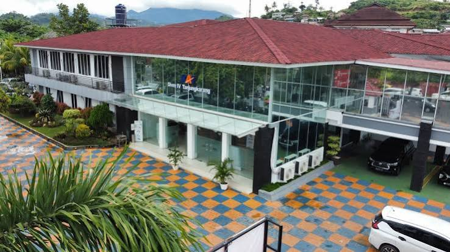

Informasi Aset Jaringan
Setiap Stasiun Seketika
SIVERA IV membantu pegawai Divre IV Tanjung Karang melihat status aset perangkat di setiap wilayah tanpa perlu mencari data secara manual.

SIVERA IV
Sistem Informasi Divre IV Tanjung Karang
SIVERA IV membantu pegawai Divre IV Tanjung Karang melihat status aset perangkat di setiap wilayah tanpa perlu mencari data secara manual.
